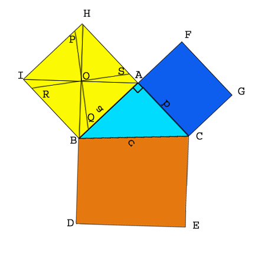
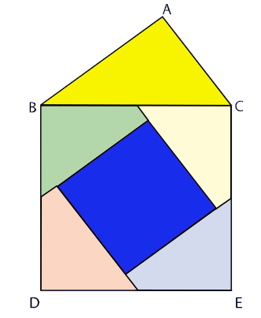

As performed in the real lab:
Materials Required:
card board, colored pencils, pair of scissors, fevicol, geometry box.
Procedure:
1. Take a card board of size say 20 cm × 20 cm.
2. Cut any right angled triangle and paste it on the cardboard. Suppose its sides are a, b and c.
3. Cut a square of side a cm and place it along the side of length a cm of the right angled triangle.
4. Similarly cut squares of sides b cm and c cm and place them along the respective sides of the right angled triangle.
Label the diagram as shown in Fig(a).
5. Join BH and AI. These are two diagonals of the square ABIH. The two diagonals intersect each other at the point O.
Through O, draw RS || BC.
6. Draw PQ, the perpendicular bisector of RS, passing through O.
7. Now the square ABIH is divided in four quadrilaterals. Color them as shown in Fig(a) .
8. From the square ABIH cut the four quadrilaterals. Color them and name them as shown in Fig(b).
 Fig(a)  Fig(b)
As performed in the simulator:
1. Draw a right angled triangle by giving base and heights in the input box.
2. Now, click on the respective three sides of a triangle.
3. Now, click on the three squares to fill with distinct colors.
4. Now, click on the base square to draw its diagonals.
5. Now, click on hypotenuse to generate its parallel line.
6. Now, drag the generated parallel line to the blue square so that it passes through the point of intersection of diagonals.
7. Now, double click on this parallel line to generate its perpendicular bisector.
8. Now, check all the check boxes in the tool box to get four quadrilaterals.
9. Now, rearrange coloured pieces from the square below the base and the square along the height of the triangle, in the square along the hypotenuse.
Observation:
The square ACGF and the four quadrilaterals cut from the square ABIH completely fill the square BCED. Thus the theorem is verified.